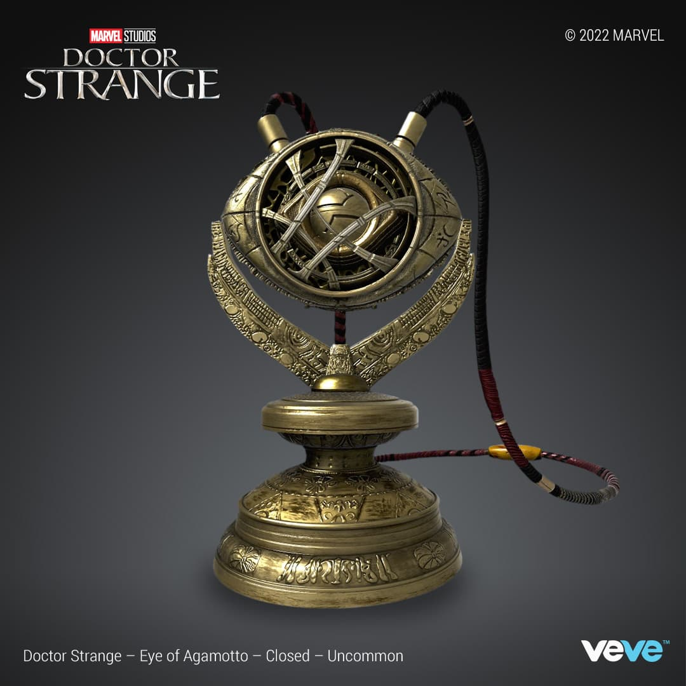
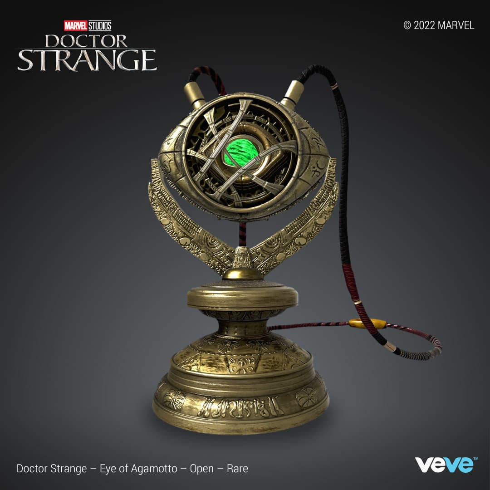
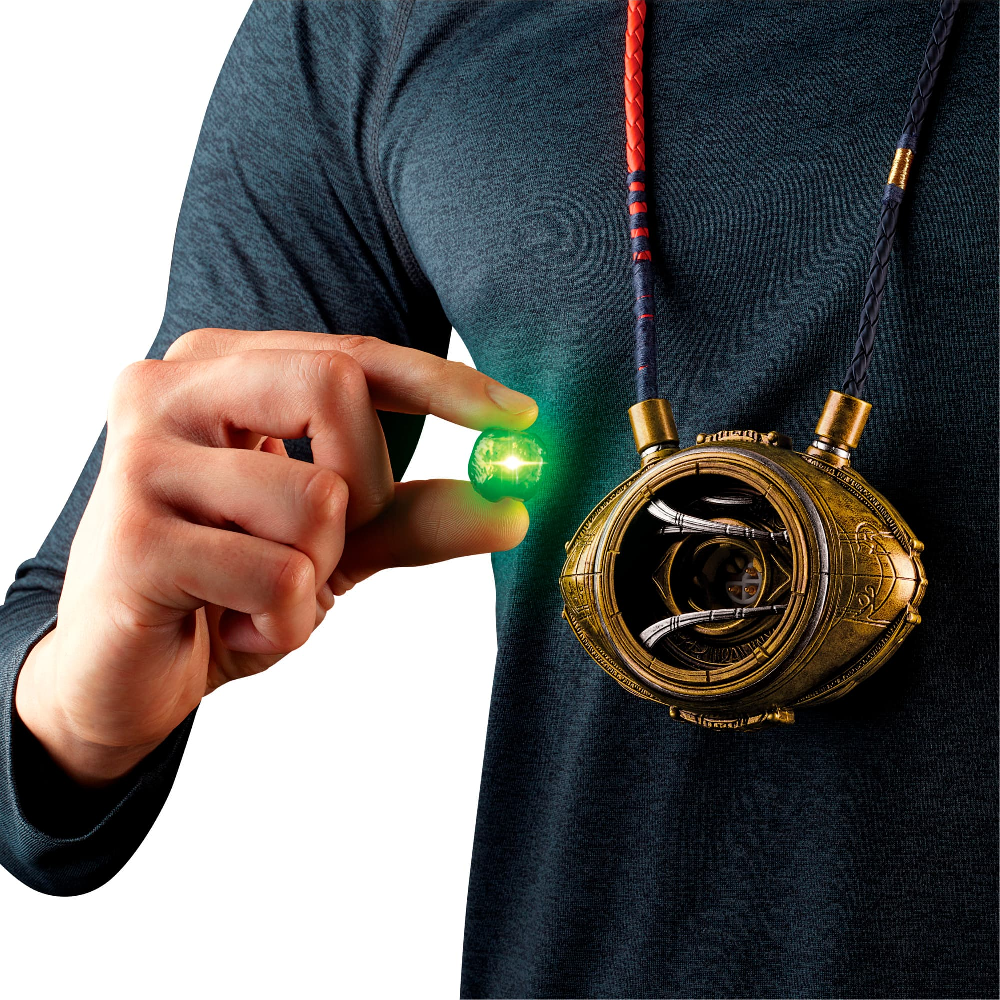
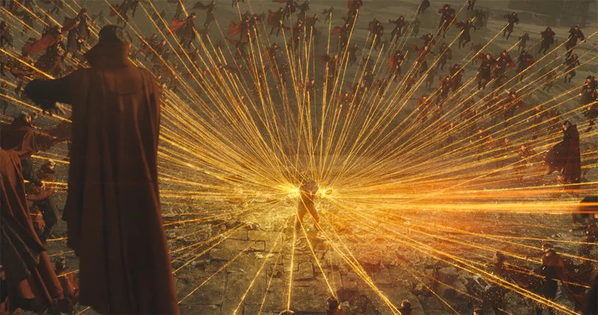
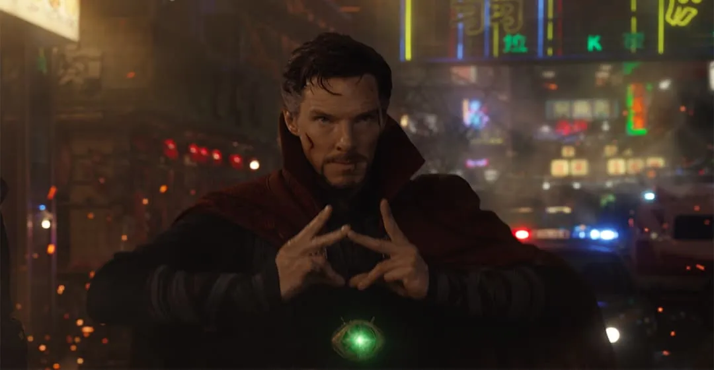
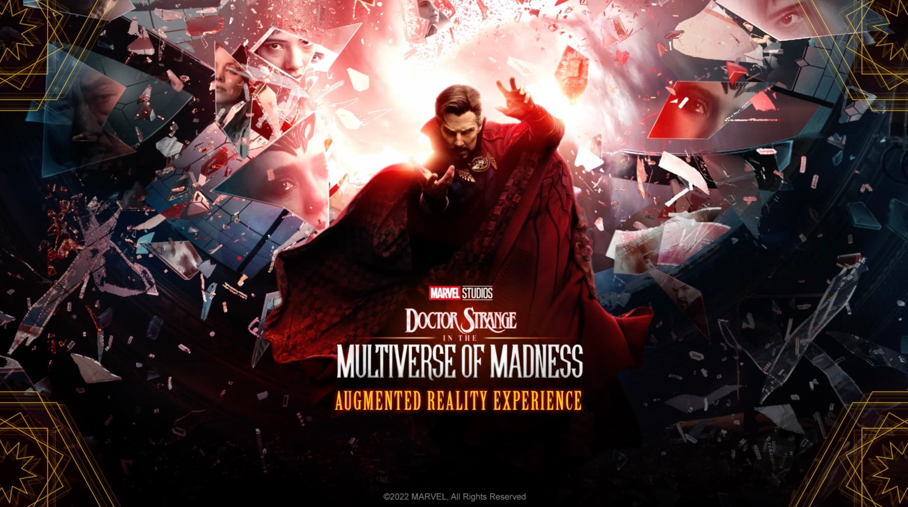
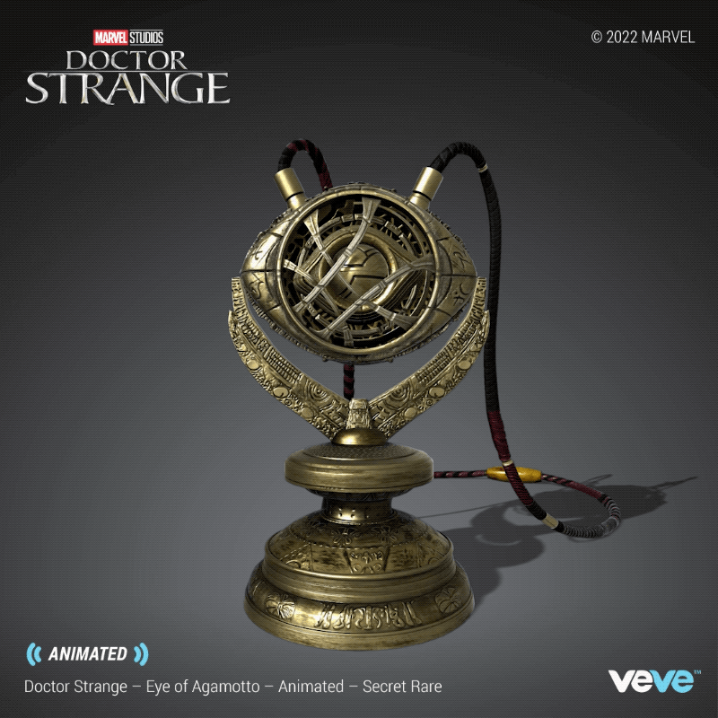

Tham khảo cách Doctor Strange tổ chức phép thuật bằng vòng đồng tâm, vật liệu cổ, ánh sáng năng lượng và chuyển động phân lớp. Chỉ dùng để nghiên cứu; không đưa ảnh hoặc biểu tượng Marvel vào sản phẩm.
#050607#6F5128#F5A623#FFD36A#39FF88

01 — Trạng thái tiềm ẩnVòng lồng nhau, lõi được bảo vệ, kim loại cũ tạo cảm giác cổ vật.

02 — Kích hoạt lõiMọi chi tiết dẫn mắt về một nguồn sáng xanh duy nhất.

03 — Chất liệuĐồng xước, rãnh khắc, dây bện và ánh sáng hiện đại tạo tương phản.

04 — Năng lượng phân nhánhĐường sáng có hướng, mật độ tăng quanh tâm và để lại khoảng tối cho chiều sâu.

05 — Cử chỉ và tiêu điểmTay, mắt và lõi năng lượng cùng nằm trên một trục thị giác.

06 — Không gian gãy lớpCác mảnh phản chiếu tạo chiều sâu; tâm sáng giữ bố cục không bị hỗn loạn.

07 — Chuyển động mở khóaHiệu ứng được hé lộ theo tầng, không bật đồng thời.